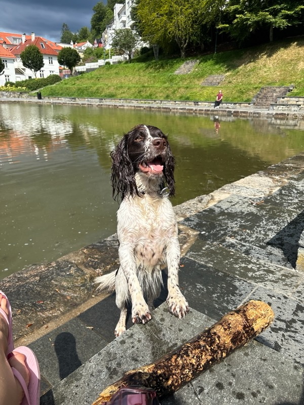
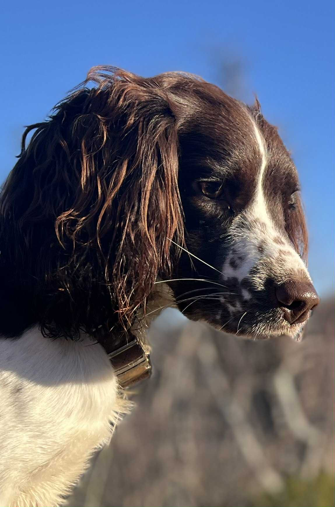
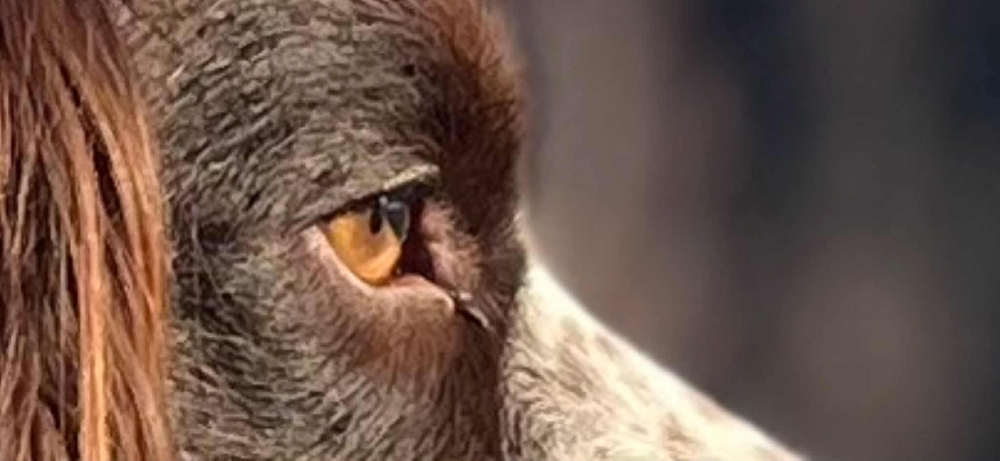
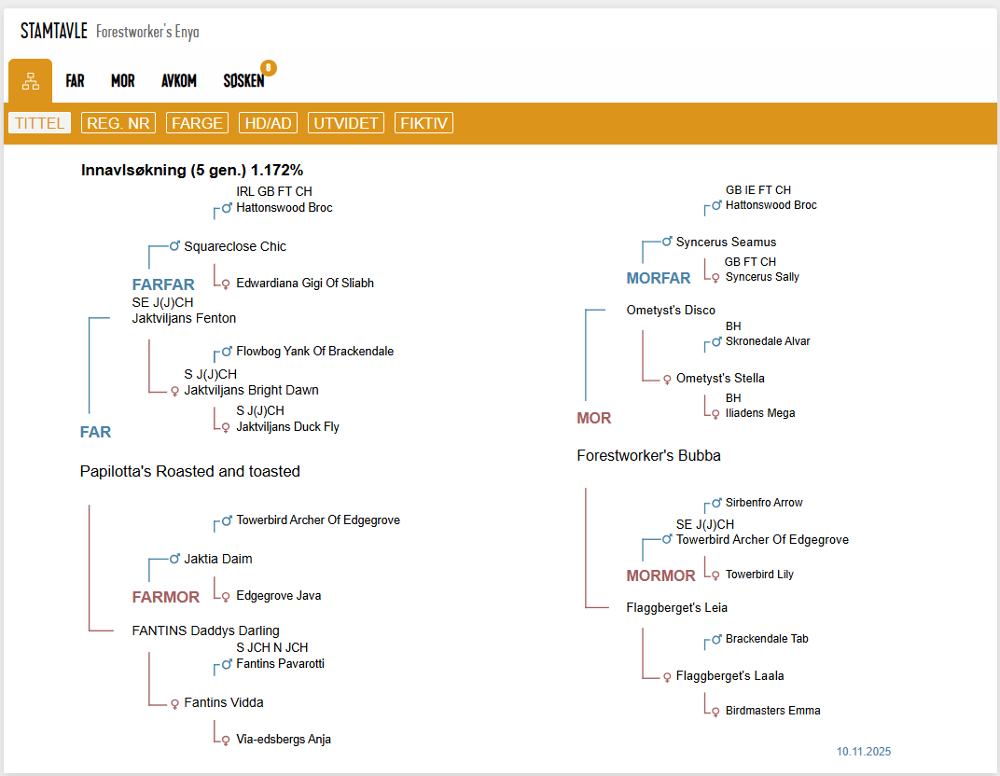

Aktiv ute
Stella trives godt i aktivitet og viser fin arbeidslyst ute.
Foreldredyr
En trygg, sosial og arbeidsglad hund med jaktlig bakgrunn og et rolig, nært familiepreg i hverdagen.
Om Stella
Stella er datter av vår første arbeidende Engelsk Springer Spaniel, Storm. Hun er tøff, uredd og glad i å jobbe, og viser stor arbeidslyst i aktivitet og ute i terrenget.
Samtidig er hun en rolig og kosete familiehund inne, med nærhet til menneskene rundt seg og et stabilt temperament i hverdagen. Denne kombinasjonen av energi, arbeidsvilje og ro er noe vi setter høyt.
Stella bor i Bergen med Ine og Simen, hvor hun får en fin blanding av byliv, familieliv og friluft. Hun er en sosial hund som trives godt både i aktivitet og i rolige omgivelser hjemme.
Bilde

Stella trives godt i aktivitet og viser fin arbeidslyst ute.

Hun er glad i oppgaver og liker å bruke både kropp og hodet.

Inne er Stella en rolig, kosete og trygg familiehund.
Stamtavle
Her kan du se Stella sin stamtavle. Denne gir et godt bilde av bakgrunnen hennes og linjene hun kommer fra.

Offisiell stamtavle for Stella.
Mer informasjon
Ta gjerne kontakt dersom du ønsker mer informasjon om Stella, hennes bakgrunn eller hennes rolle som mor i kullet.